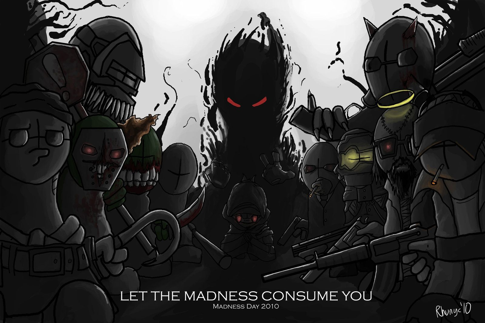
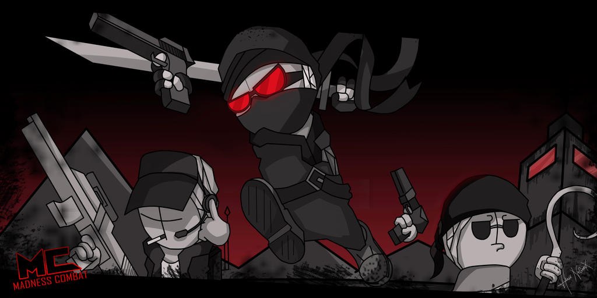

Inicio
Madness Combat es una serie flash que se subio originalmente en la pagina llamada newgrouds, esta pagina de caracterisa por ser una pagina muy liberal en cuestion de su contenido, la serie de madness combat se caracterisa por ser sangrinta combianda con ciencia ficcion, su creador se llama Matt Jolly pero es mas conocido como Krinkels.
Historia
La historia se centra en 3 maquinas llamadas "Estabilisadores de Inprobabilidad Portables" unas maquinas capases de alterar la ralidad, pero estas solo funcionan con una computadora con un sistema en especifivo o conectado al cerebro de una persona lo qie la vuelve en un semi cyborg. El protagonista se llama Hank J. Winbleton al principio el estava en contra del "Sherif" un hombre con mucho poder tanto militar como economico, pero en un momento el Sherif en un momento de desesperacion activa su Estabilisador de Inprobabilidad, pero al activarlo de altera toda la realidad a tal punto que muere el sol a manos de Hank asi que el nuevo objetivo de Hank es intentar volver a la normalidad y derrotar a los otros usuarios que posen un Estabilisadores de Inprobabilidad.

Vinculos extras